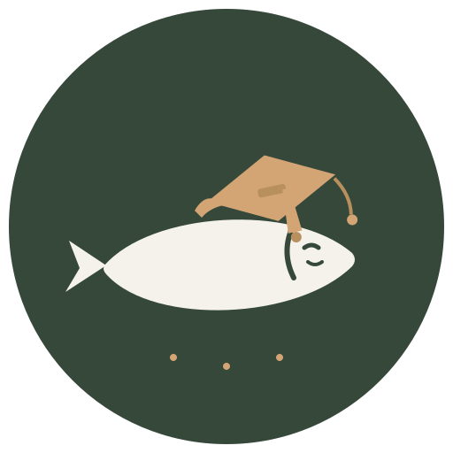
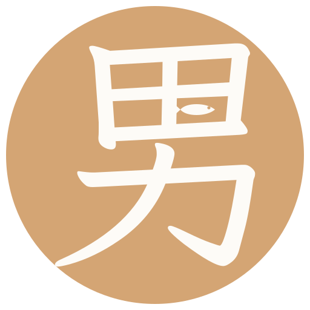

基准版
群头像/favicon
完整版（环排院名）
周边/海报深底效果
四方案横向对比 · 2026-08-16 黑机 · 德字均/字均霞鹜文楷矢量固化
外人看正经德字章，自家人看到心里有鱼。印章 = 自家人凭证。
一条闭眼微笑、戴着学位帽躺平的咸鱼 -- 男德学院毕业生的自画像。吉祥物类：亲和力强，可衍生表情包/头像/周边。

「男」= 田 + 力：用养鱼的田，养摸鱼的我们。小鱼游进右下田格 -- 同一个字里的两种人生。延续方案A藏字手法，主字换成「男」。

最一本正经的一个：外圆内盾 + 上弧院名 + 下弧「摸鱼摸鱼摸鱼」 + 盾内学士帽与咸鱼 -- 用最庄重的形式装最不庄重的内核，戏仿感拉满。
院长指正：定位语是给自己人看的归属感文案，不是对外解释。候选：